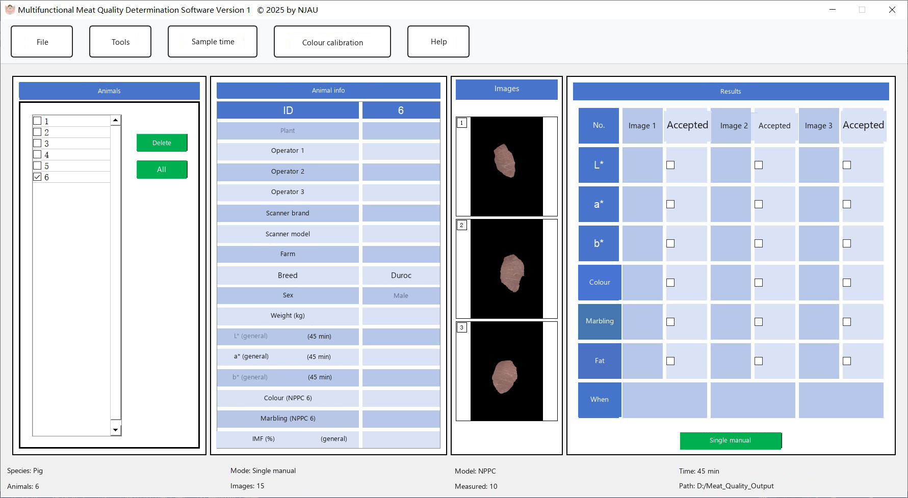
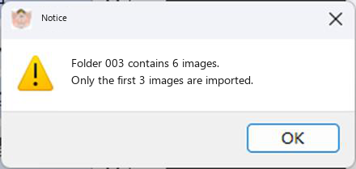
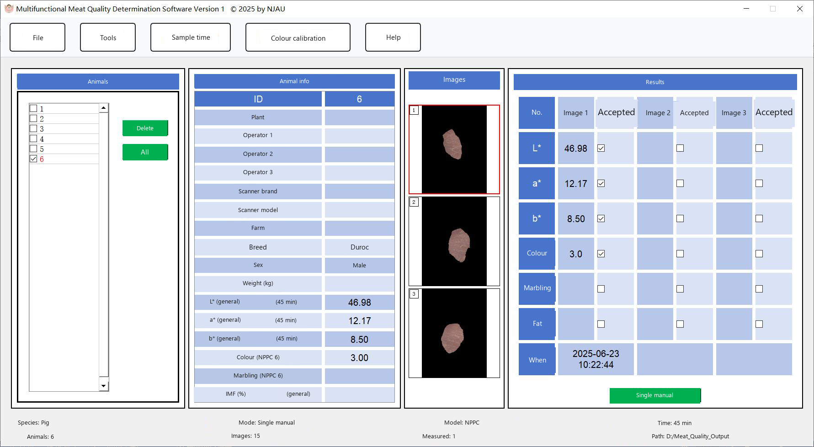
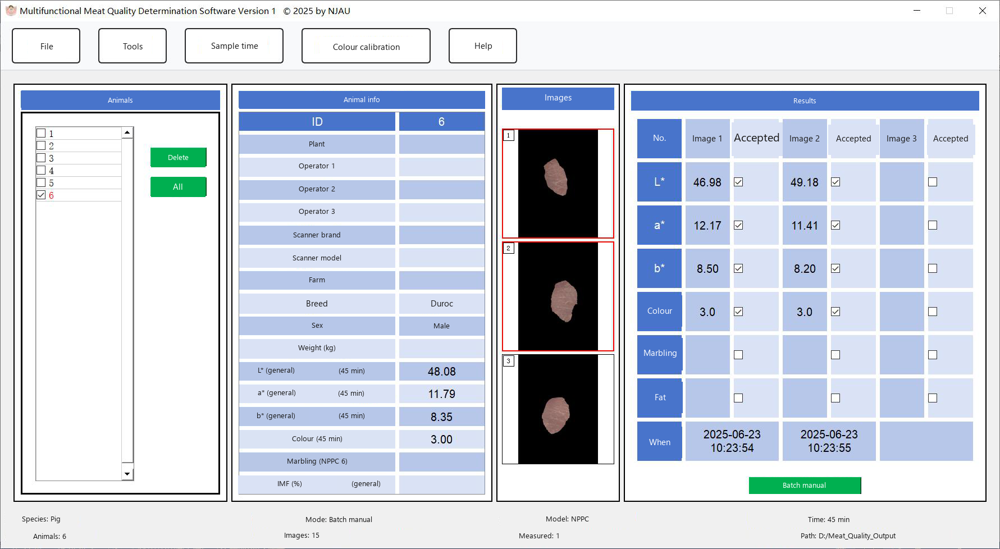
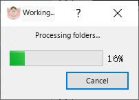
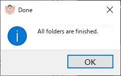
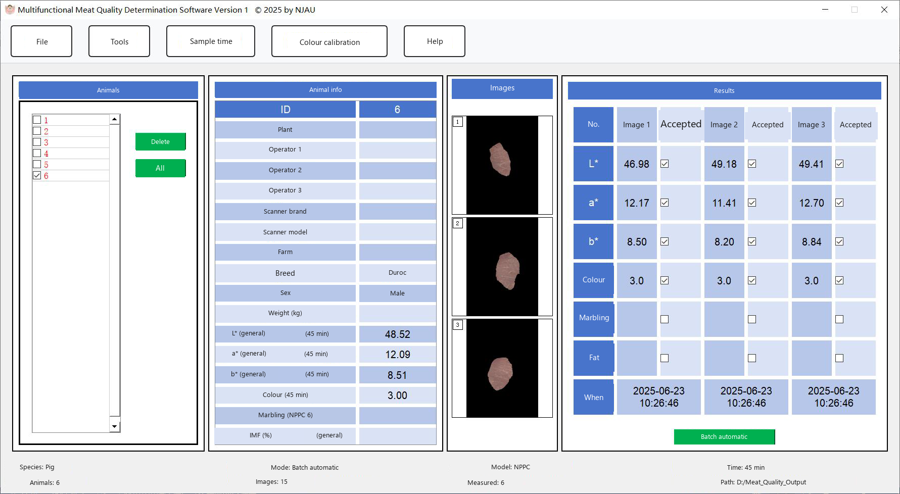

Measurement
Tick one folder in the animal list. MMQ strips non-meat colours from the first three images and shows them in the image panes.

|
 If the folder holds more than three images, a notice is shown (Fig. 28). Processed pictures can be inspected in the measure_image folder beside the executable. |
Single manual measurement
|
 Click one preview image, then click Single manual measurement. L*, a*, b* and the colour score are written into that image's column. On the 45-minute setting the marbling and fat cells stay empty. |
Multiple manual measurement
|
 Select more than one preview image, then click Multiple manual measurement. Each selected image is filled in. |
Multiple automatic measurement
Tick the folders you want, or click Select all, then click Multiple automatic measurement. The progress window stays open until the batch ends. The main window then shows the last folder. Click another folder in the list to see its numbers. Finished folders are drawn in red.



Marbling score and intramuscular fat
Switch Measurement time to 24-hour sample, then measure again with any of the three modes. The marbling score and the fat content are filled in. The result columns also record whether each image is accepted. An image that is not accepted is left out of the average and is marked in the export file.

Keep these rules in mind:
- Changing mode, model or time clears results already shown for the folder.
- Tick a measured folder again and the saved numbers come back.
- Measured folders use red text.
- Deleting the folder from the animal list deletes its saved data and pictures.
- Only accepted images enter the average.
Export the red (finished) folders from Export.